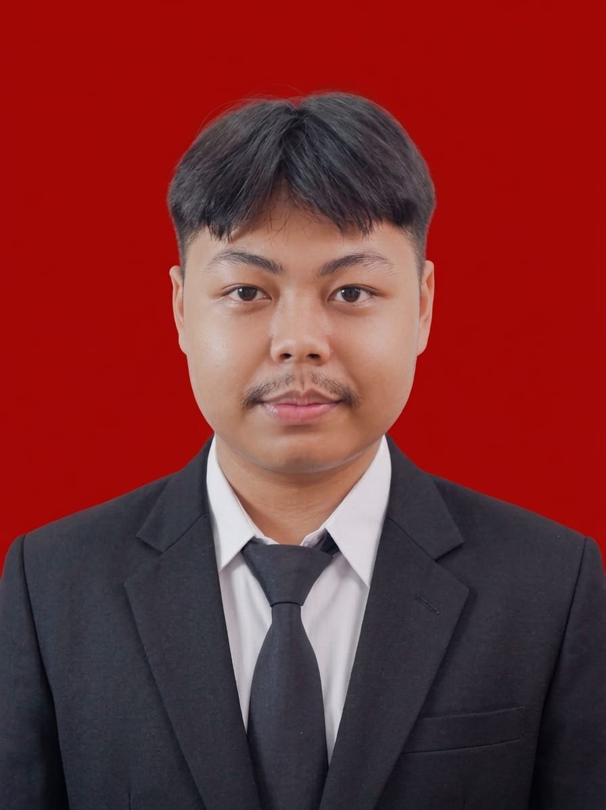

Reza Fauzy Nurkholik adalah mahasiswa S1 Manajemen Universitas Bhayangkara Jakarta Raya asal Desa Kertarahayu,kecamatan Setu, Kabupaten Bekasi. ia juga sebagai Lulusan SMAN 1 Setu jurusan Ilmu Pengetahuan Sosial (IPS). Reza memiliki rekam jejak prestasi sebagai Juara 2 Kompetisi Business Plan di Universitas nya pada tahun 2026 serta pengalaman kerja nyata sebagai anggota KPPS Desa Kertarahayu. Reza mengombinasikan latar belakang ilmu sosial dan perencanaan bisnis strategis untuk membangun karier profesional di bidang Manajemen Sumber Daya Manusia (HRD).